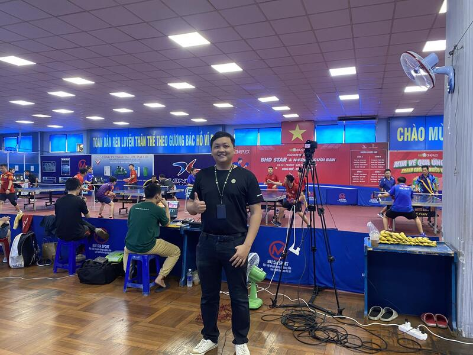

BHD Star Cineplex
Senior Marketing Specialist

- Event Management
- Took charge of planning, coordinating, and supporting various company events, including film premieres, member gatherings, film festivals, and customer care events during special occasions such as Mid-Autumn Festival and Halloween.
- Successfully executed events, ensuring seamless logistics, and creating memorable experiences for attendees.
- Promotion & Partnership
- Collaborated with partners to negotiate advertising rights and sponsorship benefits, crafting compelling promotional programs to attract and engage cinema-goers.
- Developed and nurtured strategic partnerships, enhancing the cinema's brand presence and driving footfall.
- Marketing Strategies
- Formulated content plans and generated creative concepts for key art across digital and social media platforms.
- Conducted engaging live streams to interact with the audience, fostering a sense of community and loyalty among cinema patrons.
- Operations
- Provided exceptional customer service, addressing inquiries, and ensuring a positive cinema experience.
Managed the smooth operation of Box Office and Concession areas, optimizing customer flow and satisfaction.
- Conducted post-event evaluations, analyzing the success and areas for improvement in collaboration with partners.
- Additional Contributions
- Implemented data-driven strategies to analyze customer behavior and preferences, informing future marketing initiatives.
- Led cross-functional teams to align event, promotion, and marketing efforts, ensuring a cohesive brand message.
- Spearheaded initiatives to enhance operational efficiency, resulting in improved customer service and increased revenue.
This experience underscores my proficiency in developing and executing integrated marketing strategies, fostering partnerships, and enhancing customer satisfaction. My multifaceted role allowed me to contribute significantly to the overall success of BHD Star Cineplex.